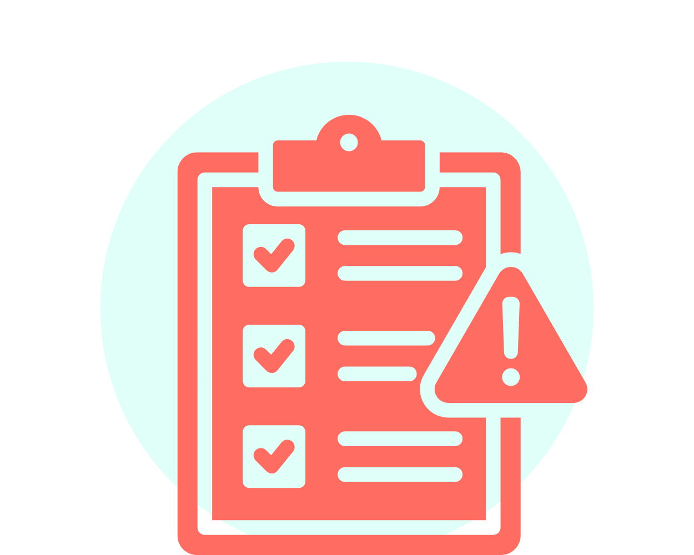

Riskbedömning
Arbetsgivaren ska genomföra en riskbedömning för varje ny arbetsplats. Resultaten ska
överlämnas till BAS-U, som ansvarar för att samordna och planera arbetet så att inga nya
risker skapas.
Arbetsgivarens ansvar för en säker arbetsmiljö
Arbetsgivaren har huvudansvaret för arbetsmiljön och är skyldig att tillsammans med skyddsombud utveckla rutiner som säkerställer en säker och hälsosam arbetsmiljö. Arbetsgivaren måste vidta alla nödvändiga åtgärder för att förhindra att arbetstagarna drabbas av olyckor eller sjukdom, oavsett om arbetet utförs på en byggarbetsplats eller ett fast arbetsställe.


Rätt instruktioner & kompetens
Arbetsgivaren måste se till att arbetstagarna får de nödvändiga instruktionerna och att
arbetsmiljöplanen presenteras för den egna personalen. Dessutom ska arbetsgivaren säkerställa
att arbetstagarna har rätt kompetens för sina uppgifter och den utrustning de använder.
Tillstånd & utrustning
Det är arbetsgivarens ansvar att se till att arbetstagarna har de nödvändiga tillstånden för
sina arbetsuppgifter, som till exempel för truck, asbesthantering eller lyftkranar. Arbetsgivaren
måste också kontrollera att all utrustning är besiktigad och fri från anmärkningar.
Arbetsgivaren har en skyldighet att säkerställa att arbetstagarna uppfyller de krav som ställs för
deras specifika arbete. Om dessa krav inte uppfylls kan det leda till sanktionsavgifter. På
byggarbetsplatsen behöver BAS-U veta vilka kompetenser arbetstagarna har och att de har giltiga tillstånd
för att använda olika maskiner.
Ansvarsfördelning
Arbetsgivaransvaret är grundläggande för all planering i byggprojektet. Förutom arbetsgivaren har även
byggherren, BAS-P och BAS-U ett arbetsmiljöansvar. Byggherren ska säkerställa att BAS-P och BAS-U har
rätt kompetens och erfarenhet för sina uppdrag.